Introduction: This game is a two player game where you race a parrot and a lion across the desert. Each player has to press a key as fast as they can to move their animal, the first one to reach the edge of the screen wins.
screenshot
STEP 1: Create the scene and add the sprites
Select the Stage, and add the desert background. ticking off the boxes below:
Add a new sprite, select the lion sprite that you will find in the animals folder.
Add another sprite, select the parrot sprite that you will find in the animals folder.
STEP 2: Make the lion and the parrot move
We want the sprite to move when you press a key.
First select the lion sprite and set it to move 4 steps when you press the ‘L’ key.
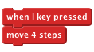
Next, select the parrot sprite and set it to move 4 steps when you press the ‘A’ key.
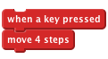
Test Your Project
Click the green flag Do your lion and parrot move across the screen when you press the ‘A’ and ‘L’ keys?
Save your project
STEP 3: Starting the race
We need to have a way to start the race and to know who has won. First we create a start button.
Add a new sprite from a file. Choose the button sprite which is inside “things”.
Edit the costume of the button sprite, add the text ‘start’ to it and click OK. Move the sprite to the middle of the stage.
Now add a script that shows the sprite when the project is run:
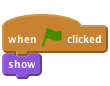
Now we want the button to count down from 3 and then say go and then hide when it is clicked. Add another script like this one:
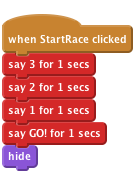
Test Your Project
Click on the green flag.
When you press the start button does it countdown to the start of the race before disappearing?
Save your project
We only want the racers to move after the race has started and we want to know when the race has finished so we need a variable to hold that information.
Add a variable for all sprites called racing. Untick the box next to it so it does not show on the stage.
Now set racing to be 0 when the project is first started. Change your when FLAG clicked script from before to look like this:
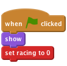
Next, set the racing variable to be 1 when the starting countdown has finished.
Now we need to stop the lion and the parrot from moving unless the racing variable is set to be 1. Click on the parrot sprite. Add a control block to the script that only allows the parrot to move if racing = 1.
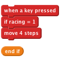
Now do the same for the lion sprite.
Test Your Project
Click on the green flag.
Does the lion or the parrot move only after the countdown has finished?
We want to know who wins the race and reset it when it has finished so you can race again.
STEP 4: Finishing the race
Add a block to the parrot’s script that sets the racing variable to be 0 when the sprite touches the edge of the screen.
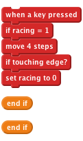
Now we want the parrot to let us know if it wins the race. Record a new sound for the Parrot sprite that will be played when the parrot wins. Click sounds and then record the sound of the parrot winning the race!
Now add blocks that play the sound you recorded and makes the parrot say it has won:
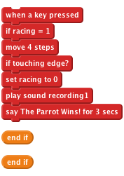
Now repeat these steps for the lion.
Test Your Project
Click on the green flag.
Can you press the start button and race by pressing the ‘A’ and ‘L’ keys? Do the sprites make their winning sound and say they’ve won when they reach the end of the race?
Save your project
STEP 5: Resetting the game
After the race is finished we need to tell the other sprites we have won and reset the game so we can play again.
We need the winning sprite to broadcast that it has won.
Click on the Parrot sprite. Add a block that broadcasts “finished” after the sprite says it has won.
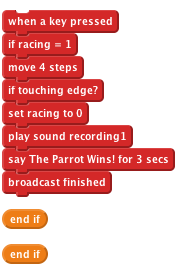
Now we need to add a new script that listens for the finished broadcast and moves the parrot back to the start. What happens if you change the value that x is set to?
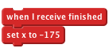
Now add the same script for the lion. Test different x values to make sure the lion and the parrot line up at the start.
We also want to put the lion and the parrot in the same position when the project is run, so add another script to each that moves them to the start when we click the flag.
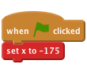
Now click on the button sprite and add a script that shows it when it receives the finished message. ###Test Your Project Click on the green flag.
Can you race against a friend, one of you moving the parrot by pressing ‘A’ and the other moving the Lion by pressing ‘L’?
Save your project
Challenge: Add a booster
Try to add a booster that you can use once each race that moves the parrot or the lion 30 steps in 1 go.
Add a new costume with fire coming out behind for each sprite and make it appear when the boost is pressed.
Create another sound that the sprite will make when the boost is pressed.
Test Your Project
Save your project
Well done you’ve finished, now you can enjoy the game! Don’t forget you can share your game with all your friends and family by clicking on Share on the menu bar!